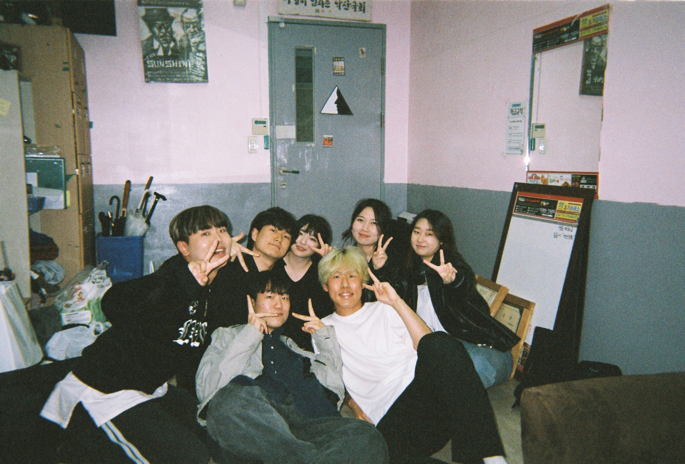

jejudo jota! suhan · Jeju · 2025 · EOS M100 #Summer #Workout #Island with friend suhan · friend · alpha · autoboy #friend #alpha  Naksan Theater suhan · Hansung · 2022-2023 · Hangover #act #Naksan #Hansung Fujirock2025 jongy · 2025 · RICO GR3 #Fujirock #2025 #Chill snowday in chicago jongy · snow · 2025 · RICO GR3 #snow #chicago #Chill portratit jongy · portrait · 2025 · RICO GR3 #moment #memory #Chill ‹ › 1 / 1